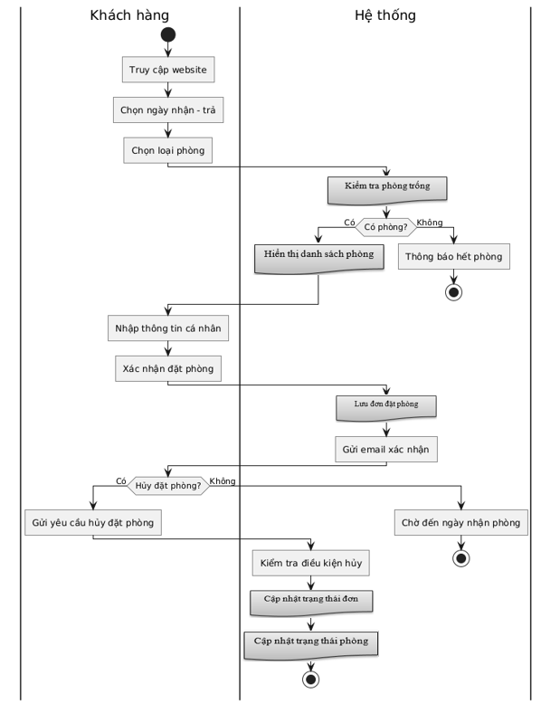
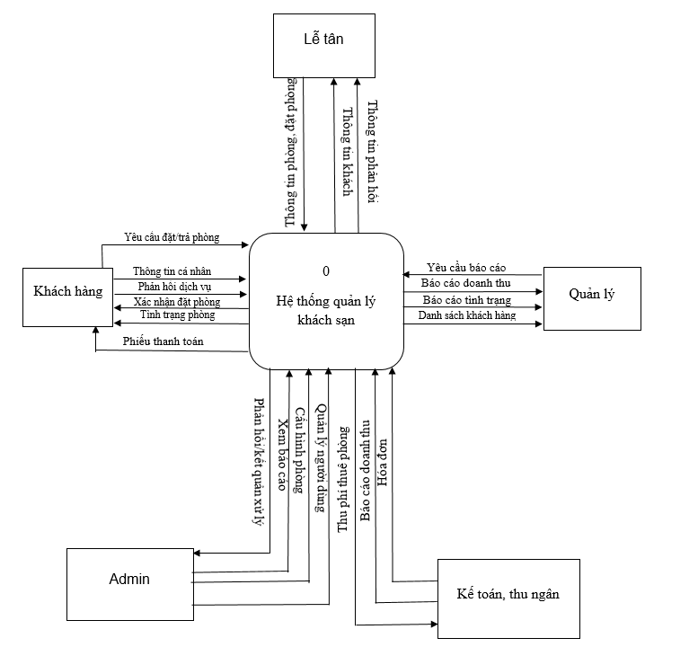
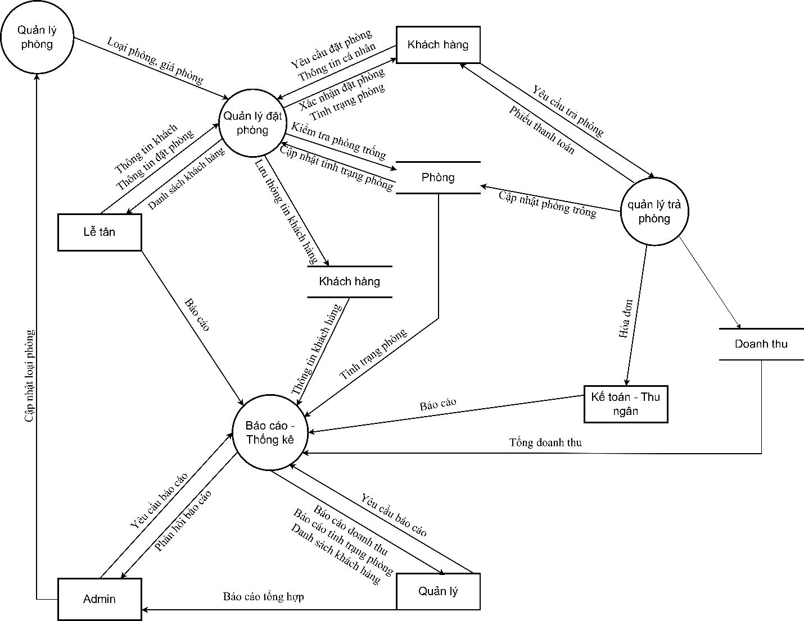
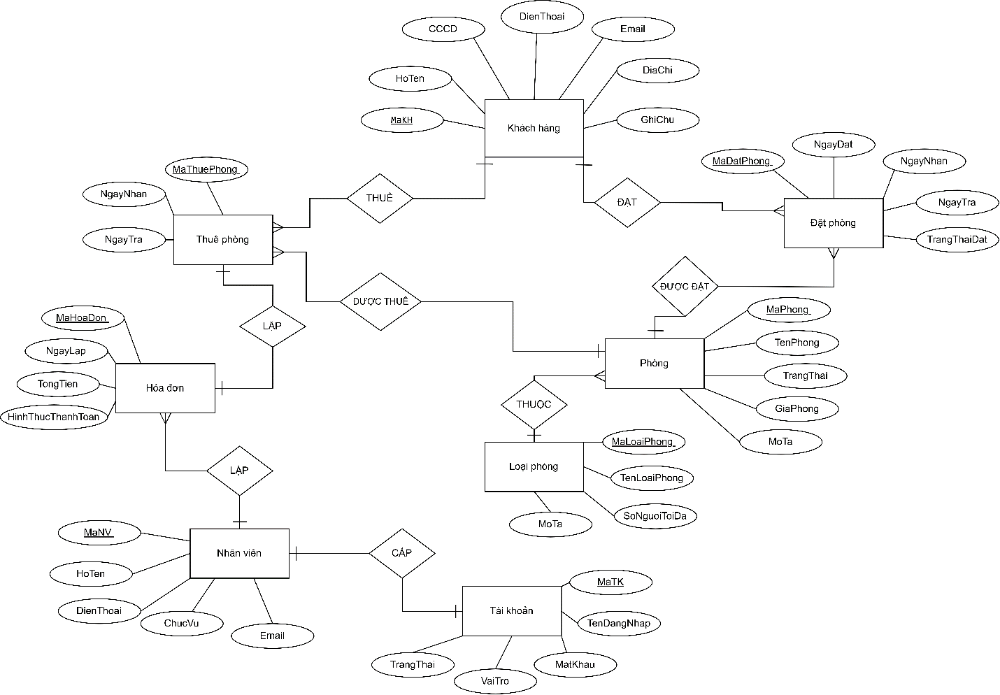
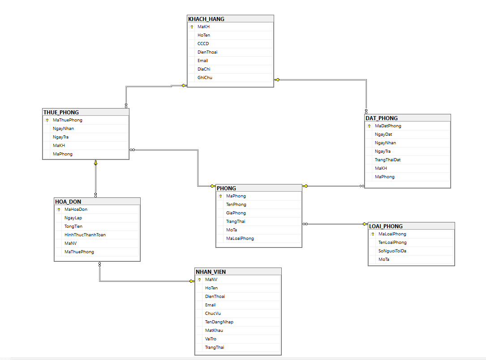
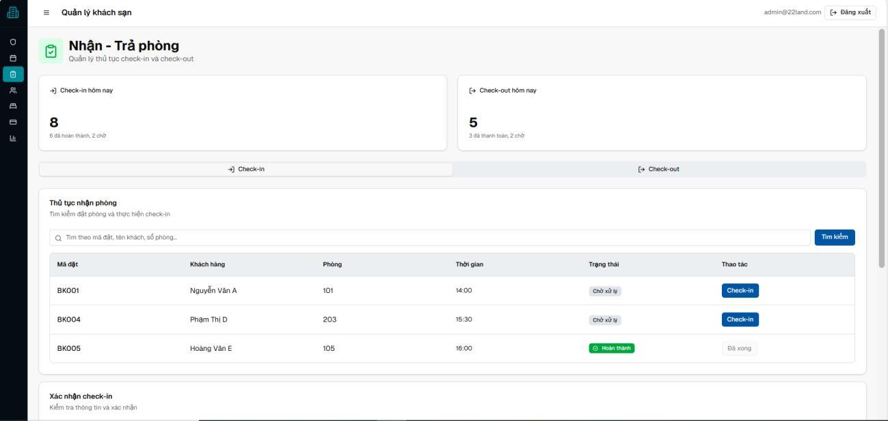
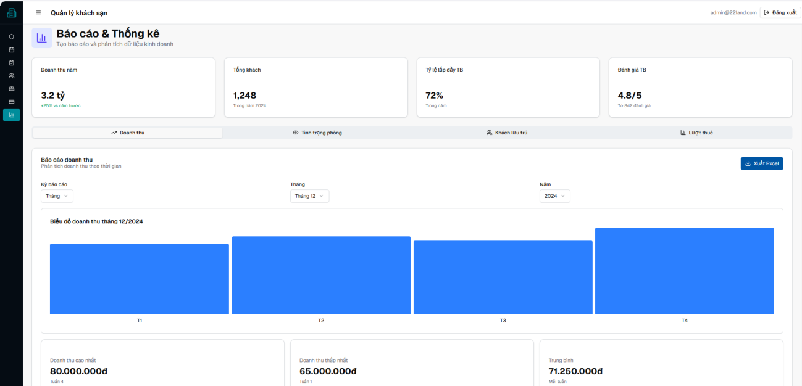

2025 · Phân tích và thiết kế hệ thống thông tin
22Land ResidenceHotel Management System
Bài tập lớn học phần về phân hệ quản lý thuê phòng.
Bài toán và phạm vi
Phân tích và thiết kế phân hệ quản lý thuê phòng cho đề tài 22Land Residence. Phạm vi gồm đặt phòng trực tiếp và online, quản lý khách hàng, nhận–trả phòng, thanh toán và báo cáo thống kê.
Bản thiết kế mô tả quy trình và luồng thông tin, xác định thực thể và quan hệ dữ liệu, sau đó dùng giao diện minh họa để thể hiện các chức năng chính.
Sơ đồ nghiệp vụ
Activity Diagram mô tả trình tự đặt phòng. Context Diagram cho thấy hệ thống trao đổi thông tin với các tác nhân bên ngoài. DFD mô tả luồng dữ liệu giữa tác nhân, tiến trình và kho dữ liệu.






ERD và mô hình quan hệ
Xác định thực thể, thuộc tính và quan hệ dữ liệu, sau đó thể hiện chúng bằng ERD và mô hình cơ sở dữ liệu quan hệ. Bấm vào hình để xem ở kích thước gốc.




Giao diện minh họa
Đồ án minh họa các màn hình đặt phòng, nhận–trả phòng, quản lý khách hàng, thanh toán và báo cáo. Dưới đây là ba màn hình trích trực tiếp từ báo cáo.





Kết quả học tập và giới hạn
Đồ án thực hành việc chuyển quy trình thuê phòng thành sơ đồ nghiệp vụ, mô hình dữ liệu và giao diện minh họa. Các hình thuộc bản thiết kế học phần năm 2025. Số liệu trên giao diện là nội dung minh họa của bản thiết kế. Phạm vi trình bày dừng ở phân tích và thiết kế học thuật.